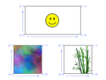

Panda3D Manual: Texture uvs.png
{kind=link}
{kind=link}
{kind=link}

No higher resolution available.
Texture_uvs.png (400 × 300 pixels, file size: 64 KB, MIME type: image/png)
Illustration of (u, v) assignment to texture images
This file was generated with the following program:
from direct.directbase.DirectStart import *
from pandac.PandaModules import *
base.setBackgroundColor(1, 1, 1, 1)
def showTexture(filename, fx, fy):
tex = loader.loadTexture(filename)
tex.setMinfilter(Texture.FTLinearMipmapLinear)
root = NodePath(filename)
root.reparentTo(aspect2d)
cm = CardMaker('card')
cm.setFrame(-fx, fx, -fy, fy)
card = root.attachNewNode(cm.generate())
card.setTexture(tex)
ls = LineSegs('frame')
ls.setColor(0, 0, 0, 1)
ls.moveTo(-fx, 0, -fy)
ls.drawTo(fx, 0, -fy)
ls.drawTo(fx, 0, fy)
ls.drawTo(-fx, 0, fy)
ls.drawTo(-fx, 0, -fy)
card.attachNewNode(ls.create())
tn = TextNode('label')
tn.setTextColor(0.4, 0.5, 1, 1)
tn.setAlign(TextNode.ARight)
tn.setText('(0, 0)')
tnp00 = root.attachNewNode(tn.generate())
tnp00.setPos(-fx - 0.02, 0, -fy - 0.05)
tnp00.setScale(0.1)
tn.setText('(0, 1)')
tnp01 = root.attachNewNode(tn.generate())
tnp01.setPos(-fx - 0.02, 0, fy - 0.02)
tnp01.setScale(0.1)
tn.setAlign(TextNode.ALeft)
tn.setText('(1, 0)')
tnp10 = root.attachNewNode(tn.generate())
tnp10.setPos(fx, 0, -fy - 0.05)
tnp10.setScale(0.1)
tn.setText('(1, 1)')
tnp11 = root.attachNewNode(tn.generate())
tnp11.setPos(fx, 0, fy - 0.02)
tnp11.setScale(0.1)
tn.setAlign(TextNode.ACenter)
tn.setSlant(0.2)
tn.setText('u')
tnpU = root.attachNewNode(tn.generate())
tnpU.setPos(-fx + 0.1, 0, -fy - 0.1)
tnpU.setScale(0.1)
tn.setText('v')
tnpV = root.attachNewNode(tn.generate())
tnpV.setPos(-fx - 0.1, 0, -fy + 0.1)
tnpV.setScale(0.1)
ls = LineSegs('arrows')
ls.setColor(0.4, 0.5, 1, 1)
ls.moveTo(-fx + 0.17, 0, -fy - 0.08)
ls.drawTo(fx - 0.1, 0, -fy - 0.08)
ls.moveTo(fx - 0.17, 0, -fy - 0.05)
ls.drawTo(fx - 0.1, 0, -fy - 0.08)
ls.drawTo(fx - 0.17, 0, -fy - 0.11)
arrowU = root.attachNewNode(ls.create())
ls = LineSegs('arrows')
ls.setColor(0.4, 0.5, 1, 1)
ls.moveTo(-fx - 0.09, 0, -fy + 0.18)
ls.drawTo(-fx - 0.09, 0, fy - 0.15)
ls.moveTo(-fx - 0.12, 0, fy - 0.22)
ls.drawTo(-fx - 0.09, 0, fy - 0.15)
ls.drawTo(-fx - 0.06, 0, fy - 0.22)
arrowV = root.attachNewNode(ls.create())
return root
s = showTexture('maps/smiley.rgb', 1, 0.5)
n = showTexture('maps/noise.rgb', 0.5, 0.5)
b = showTexture('maps/envir-bamboo.png', 0.5, 0.5)
top = aspect2d.attachNewNode('top')
s.reparentTo(top)
s.setPos(0, 0, 0.7)
n.reparentTo(top)
n.setPos(-0.9, 0, -0.7)
b.reparentTo(top)
b.setPos(0.9, 0, -0.7)
top.setScale(0.7)
base.graphicsEngine.renderFrame()
base.screenshot('texture_uvs.png', defaultFilename = 0)
|
File history
Click on a date/time to view the file as it appeared at that time.
| Date/Time | Thumbnail | Dimensions | User | Comment | |
|---|---|---|---|---|---|
| current | 14:32, 4 October 2005 |  | 400 × 300 (64 KB) | Drwr (Talk | contribs) | |
| 14:29, 4 October 2005 |  | 400 × 300 (78 KB) | Drwr (Talk | contribs) | Illustration of (u, v) assignment to texture images |
- Edit this file using an external application (See the setup instructions for more information)
{kind=link}
File usage
The following page links to this file:
| Back to the Manual |
© Carnegie Mellon University 2010